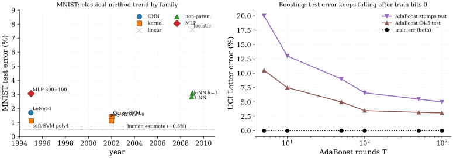

This chapter catalogs the references covered in Part I, grouping them by topic and cross-linking to the chapter where each is discussed in detail. The goal is to make the prerequisite structure explicit: a reader who has seen, for instance, the Hoeffding inequality in passing can skip the concentration chapter; a reader who has not should follow the link before tackling VC/Rademacher bounds.
The unifying thread of Part I is the uniform-convergence paradigm: relate the population risk of the ERM hypothesis to its empirical risk via a capacity term that depends on the hypothesis class, then choose a class whose capacity is provably small. Every paper below contributes either a capacity measure (VC dimension, Rademacher complexity, fat-shattering dimension, margin), a tail inequality that turns expectations into high-probability statements (Hoeffding, Bernstein, McDiarmid), or a concrete algorithm whose generalization can be analyzed inside the framework (SVM, AdaBoost, kernel ridge regression). The later Parts of the book will show how each of these components either breaks or bends when the hypothesis class becomes a deep neural network trained by SGD.
Lineage of the classical theory
The statistical reading of supervised learning begins with the uniform convergence theorem of (Vapnik and Chervonenkis 1971), which bounds the gap between empirical and population error uniformly over a hypothesis class and, in the same stroke, introduces the growth function and the VC dimension as the first general capacity measures; this is the result on which the VC / Rademacher chapter is built. (Vapnik 1995) later organizes these bounds for both classification and regression into the Structural Risk Minimization programme, the prescription to trade empirical fit against capacity by minimizing over a nested family of classes; that programme frames both the ERM and MLE and VC / Rademacher chapters. The modern textbook synthesis of this uniform-convergence view (Rademacher complexity, VC, margin bounds, kernels) is (Mohri et al. 2018), used as the standing reference throughout ERM, VC, kernels, SVM, and boosting.
The capacity side of the theory was then sharpened in two directions. (Bartlett and Mendelson 2002) replaces the distribution-free VC dimension with the data-dependent Rademacher and Gaussian complexities and proves the symmetrization bound that is now standard, yielding estimates that adapt to the sample rather than to the worst case. In parallel, the capacity of neural networks specifically was estimated first by (Baum and Haussler 1989), whose VC-based sample-complexity count for threshold feed-forward networks is the earliest such result, and then collected with the pseudo-dimension and fat-shattering refinements in the monograph of (Anthony and Bartlett 1999); all three feed the VC / Rademacher chapter.
Underneath every such bound sits a tail inequality that converts an expectation into a high-probability statement. (Boucheron et al. 2013) is the standard reference for this machinery (Hoeffding, Bernstein, the bounded-differences inequality, the entropy method, and log-Sobolev arguments), and (Murphy 2023) gives the practitioner-oriented digest of the same tools as they feed PAC and PAC-Bayes analyses; both are treated in the Concentration chapter.
A complementary, estimation-theoretic account of the same fitting procedures comes from classical asymptotics. (Vaart 1998) develops the consistency, the rate, and the limiting normal law of M-estimators and the maximum-likelihood estimator, while (Murphy 2022 Ch 5) supplies the Bayesian-probabilistic framing in which ERM, MLE, and MAP differ only by their regularizer; both inform the ERM and MLE chapter.
The kernel branch of the field gives the theory a function-space home. (Schölkopf and Smola 2002) is the canonical account of positive-definite kernels, the reproducing-kernel Hilbert space, the representer theorem, and their use in the SVM and kernel PCA, and (Rasmussen and Williams 2006) is its Bayesian counterpart, developing Gaussian-process covariance functions, posterior inference, the marginal likelihood, and the equivalence to kernel ridge regression; the Kernels chapter draws on both.
These pieces meet in the support vector machine, the algorithm that made the margin theory concrete. (Boser et al. 1992) introduces the kernel trick in the dual of the margin classifier, allowing nonlinear boundaries with no explicit feature map; (Cortes and Vapnik 1995) adds the slack variables and the hinge loss of the soft-margin formulation, extending the method to non-separable data; and (Platt 1999) makes it practical with Sequential Minimal Optimization, a pairwise coordinate-ascent scheme that solves the quadratic program without a general QP solver. The SVM chapter follows exactly this progression.
Boosting supplies the other classical algorithm and, with it, the first clean case of benign overfitting. (Freund and Schapire 1997) introduces AdaBoost and bounds its training error by the product of the per-round normalization constants, and (Schapire et al. 1998) then explains the algorithm's most puzzling behavior, the continued improvement of test error after the training error reaches zero, with a bound that depends on the margin distribution rather than on the number of rounds; the Boosting chapter develops both. That last observation, capacity controlled through a margin rather than through a parameter count, is precisely the thread the later Parts pick up once the classifier becomes an overparameterized network.
SoTA table: classical benchmarks
Classical learning theory crystallized around a handful of algorithm families on a stable benchmark suite (MNIST digits, USPS, UCI Letter, UCI Pima/Spambase). Each family carries a signature failure mode that the uniform-convergence framework either explains or fails to explain, and these failures are exactly the entry points for the post-classical theory developed in Parts II-V. The leaderboard below catalogs the headline result for each family with hyperparameters in parentheses; the prose around it walks through the families chronologically and attaches footnote markers at the clause where each failure mode first becomes visible.
The intro paragraph for Part I already framed uniform convergence as the central paradigm. Every component of the framework sits under it in the same shape. The component buys a guarantee, the guarantee rests on one assumption, and modern practice breaks that assumption. There are nine such components in the leaderboard, and the table below lays them out in that shape, with the footnote on each row carrying the arithmetic. Reading the table by column rather than by row is the point of Part I: the middle column is what the classical theory delivers, and the right-hand column is the list of exits into Parts II to V.
| Component | What it buys | Assumption modern practice breaks | Detail |
|---|---|---|---|
| VC dimension (Vapnik and Chervonenkis 1971) | sample complexity from combinatorial richness, not cardinality | capacity is small against | 1 |
| Rademacher (Bartlett and Mendelson 2002) | data-dependent capacity, provably tighter than VC | the empirical Rademacher sits below its trivial upper bound | 2 |
| Margin, boosting (Schapire et al. 1998) | a bound in the margin distribution, not the round count | margin mass keeps moving right as rounds accumulate | 3 |
| Margin, kernel SVM (Cortes and Vapnik 1995) | the same bound transported into a feature space | the classifier separates that space with room to spare | 4 |
| Kernel as inductive bias (Schölkopf and Smola 2002 Ch 2) | an explicit class with a known Mercer eigendecay | the right kernel is picked before the data is seen | 5 |
| ERM (Vapnik 1995) | population risk controlled by empirical risk | the sample is i.i.d. from one fixed distribution | 6 |
| Concentration | expectations converted into high-probability statements | the loss is bounded, and its variance is small for the fast rate | 7 |
| Capacity read in isolation | a bound on the worst ERM minimizer in the class | the optimizer that picked the hypothesis does not matter | 8 |
| SMO (Platt 1999) | a trainable nonlinear SVM at 1999 dataset sizes | the Gram matrix fits in memory | 9 |
Two of the rows are the same mechanism seen twice. The margin bound was reformulated for boosting because AdaBoost kept improving after training error reached zero, and it transferred to the kernel SVM because both are large-margin classifiers in a possibly infinite-dimensional feature space. That shared mechanism is the one classical thread that survives into Part IV intact, which is why it is the only component here that appears twice.
| MNIST | USPS | UCI Lett | ||||||
| Method | Year | Hypothesis class | Loss / Algo | Data | err % | err % | err % | Notes |
| LeNet-1 (Cortes and Vapnik 1995) | 1995 | CNN-feedforward | SGD on softmax CE | MNIST 60k | 1.70 | ~5.0 | - | baseline |
| soft-margin SVM (Cortes and Vapnik 1995) | 1995 | kernel-RKHS | hinge SVM(C=10, poly d=4) | MNIST 60k | 1.10 | 4.00 | - | dual QP |
| hard-margin SVM (Boser et al. 1992) | 1992 | kernel-RKHS | hinge SVM(, poly d=2) | OCR 7.3k | - | - | - | sep-only |
| Gaussian SVM (Schölkopf and Smola 2002) | 2002 | kernel-RKHS | hinge SVM(RBF, =2, C=10) | MNIST 60k | 1.40 | 4.20 | - | bw tuned |
| polynomial SVM d=9 (Schölkopf and Smola 2002) | 2002 | kernel-RKHS | hinge SVM(poly d=9, C=10) | MNIST 60k | 1.10 | - | - | best-of |
| logistic regression (Hastie et al. 2009 Ch 4) | 2009 | linear-margin | logit-CE(, =1e-3) | MNIST 60k | 7.60 | 9.50 | - | linear |
| AdaBoost stumps (Freund and Schapire 1997) | 1997 | boosted-trees | AdaBoost(T=100, depth-1) | UCI Letter | - | - | 6.60 | weak |
| AdaBoost C4.5 (Freund and Schapire 1997) | 1997 | boosted-trees | AdaBoost(T=100, C4.5 base) | UCI Letter | - | - | 3.10 | strong |
| AdaBoost trees T=1000 (Schapire et al. 1998) | 1998 | boosted-trees | AdaBoost(T=1000, depth-1) | UCI Letter | - | - | 3.10 | margin |
| 1-NN baseline (Hastie et al. 2009 Ch 13) | 2009 | non-parametric | 1-NN Euclidean | MNIST 60k | 3.09 | 5.20 | - | k=1 |
| k-NN k=3 (Hastie et al. 2009 Ch 13) | 2009 | non-parametric | k-NN(k=3, Euclidean) | MNIST 60k | 2.83 | 4.95 | - | k=3 |
| 2-hidden-layer MLP (Cortes and Vapnik 1995) | 1995 | MLP | SGD on softmax CE | MNIST 60k | 3.05 | - | - | 300+100 |
The table groups the classical literature into five families (linear-margin, kernel-RKHS, boosted-trees, CNN-feedforward, non-parametric), walked through in chronological order. The margin cluster begins with Boser-Guyon-Vapnik's hard-margin formulation (Boser et al. 1992) which only applies to linearly separable data; Cortes and Vapnik (Cortes and Vapnik 1995) introduced soft margins with slack variables and hinge loss, making SVMs applicable to the bulk of real benchmarks. The polynomial-kernel SVM at reaches 1.1% MNIST test error, narrowly beating the contemporary LeNet-1 convnet baseline at 1.7%; this result was the headline selling point of kernel methods in the late 1990s. Gaussian-kernel SVMs (Schölkopf and Smola 2002) achieve a comparable 1.4% on MNIST with cross-validated bandwidth, but the choice between polynomial and RBF reflects a kernel-design judgement rather than a principled criterion10. SMO (Platt 1999) made these results computationally tractable by avoiding a general QP solver, yet the underlying Gram-matrix scaling11 put a hard ceiling on dataset size that has only been broken by random features and sketching methods (Part V).
The boosting cluster begins with AdaBoost (Freund and Schapire 1997), whose training-error bound (the product of normalization constants) decays exponentially in the number of rounds. The empirical surprise was that test error on UCI Letter kept improving from round 5 (training error already at 0) through round 1000, an apparent violation of any naive capacity-based bound12. Schapire et al. (Schapire et al. 1998) resolved the puzzle by bounding test error in terms of the margin distribution rather than the round count: the cumulative fraction of training points with margin below a threshold provides a class-capacity-times-Lipschitz bound that improves as the boosting iterates concentrate the margin mass to the right of . The mechanism is structurally similar to the SVM-margin analysis but operates over a randomized hypothesis class rather than a single max-margin classifier.

The table separates four eras: kernel-margin (1992-2002), boosting (1997-1998), the early-CNN baseline (1995, included for honest comparison), and the non-parametric reference points (1-NN, k-NN). Three readings frame the rest of the chapter. First, on MNIST the kernel-SVM family and the early-CNN family converge to within roughly half a percentage point in the 1995-2002 window, which made the choice between them appear as a matter of inductive-bias preference rather than capacity. Second, AdaBoost's behaviour on UCI Letter is a clean falsification of any pure round-count or pure capacity-count bound: the margin distribution explanation (Schapire et al. 1998) is the historical bridge that connects boosting to the SVM-margin analysis and ultimately to the implicit-regularization story of Part IV. Third, every entry above relies on an i.i.d. sampling assumption14 and a capacity notion that ignores the optimizer15; both assumptions break in modern deep learning, which is the entry point for Parts II (PAC-Bayes) and III (NTK / mean-field).
References
VC bound vacuity for deep nets: capacity proxies (VC dimension, parameter count) overestimate the necessary sample size by orders of magnitude. A network with parameters has Baum-Haussler VC of , implying for non-vacuous bounds; ImageNet trains with and generalizes anyway.↩︎
Rademacher tightness gap: data-dependent Rademacher complexity (Bartlett and Mendelson 2002) is provably tighter than VC and removes the worst-case dependence on the input distribution, but on over-parameterized networks the empirical Rademacher remains close to its trivial upper bound and the resulting generalization bound is still vacuous on standard image benchmarks.↩︎
Margin-vs-training-error trade-off: AdaBoost's training error can reach 0 after 5-30 rounds while test error keeps falling for 1000 rounds; the round-count bound predicts overfitting that empirically never occurs. (Schapire et al. 1998) resolved this by bounding test error in terms of the margin distribution, not the round count.↩︎
Margin-vs-training-error trade-off: AdaBoost's training error can reach 0 after 5-30 rounds while test error keeps falling for 1000 rounds; the round-count bound predicts overfitting that empirically never occurs. (Schapire et al. 1998) resolved this by bounding test error in terms of the margin distribution, not the round count.↩︎
Kernel design as inductive bias: the choice of kernel (linear, polynomial, RBF, Matern) encodes the hypothesis class via its RKHS, yet there is no principled data-driven selection rule; cross-validation over a small grid is the practical default and conflates kernel choice with bandwidth tuning.↩︎
ERM iid assumption: classical bounds assume the sample is drawn i.i.d. from a fixed distribution; the assumption fails for time-series, online learning, distribution shift, and covariate-shift settings, all of which require either domain-adaptation extensions or different proof techniques.↩︎
Concentration looseness for heavy tails: Hoeffding gives a sub-Gaussian tail under boundedness alone; Bernstein and Bennett tighten this when the variance is small relative to the range. Most empirical loss surfaces in deep learning have heavy-tailed gradients and per-sample-loss values, so the variance term is large and the variance-aware bound is no improvement over Hoeffding.↩︎
Capacity-vs-algorithm coupling: classical theory bounds the worst-case ERM minimizer over a hypothesis class, treating the optimizer as black-box. The actual hypothesis returned by SGD on a non-convex loss is a function of the algorithm's geometry (initialization, learning-rate schedule, batch size, implicit-regularization direction), and the gap between worst-case ERM and SGD-output can be many orders of magnitude in the bound.↩︎
SMO scaling: kernel SVMs solve a quadratic program in the dual, and a chunking solver that keeps the Gram matrix in memory pays storage. SMO (Platt 1999) avoids the general QP solver by pairwise coordinate ascent and its memory is linear in , but its measured time still runs at for a linear kernel and for a Gaussian one, against for chunking on the same machine. Linear memory is what removes the hard wall; the super-linear time is what still makes the practical ceiling, past which approximation methods (Nystrom, random features) become mandatory.↩︎
Kernel design as inductive bias: the choice of kernel (linear, polynomial, RBF, Matern) encodes the hypothesis class via its RKHS, yet there is no principled data-driven selection rule; cross-validation over a small grid is the practical default and conflates kernel choice with bandwidth tuning.↩︎
SMO scaling: kernel SVMs solve a quadratic program in the dual, and a chunking solver that keeps the Gram matrix in memory pays storage. SMO (Platt 1999) avoids the general QP solver by pairwise coordinate ascent and its memory is linear in , but its measured time still runs at for a linear kernel and for a Gaussian one, against for chunking on the same machine. Linear memory is what removes the hard wall; the super-linear time is what still makes the practical ceiling, past which approximation methods (Nystrom, random features) become mandatory.↩︎
Margin-vs-training-error trade-off: AdaBoost's training error can reach 0 after 5-30 rounds while test error keeps falling for 1000 rounds; the round-count bound predicts overfitting that empirically never occurs. (Schapire et al. 1998) resolved this by bounding test error in terms of the margin distribution, not the round count.↩︎
Margin-vs-training-error trade-off: AdaBoost's training error can reach 0 after 5-30 rounds while test error keeps falling for 1000 rounds; the round-count bound predicts overfitting that empirically never occurs. (Schapire et al. 1998) resolved this by bounding test error in terms of the margin distribution, not the round count.↩︎
ERM iid assumption: classical bounds assume the sample is drawn i.i.d. from a fixed distribution; the assumption fails for time-series, online learning, distribution shift, and covariate-shift settings, all of which require either domain-adaptation extensions or different proof techniques.↩︎
Capacity-vs-algorithm coupling: classical theory bounds the worst-case ERM minimizer over a hypothesis class, treating the optimizer as black-box. The actual hypothesis returned by SGD on a non-convex loss is a function of the algorithm's geometry (initialization, learning-rate schedule, batch size, implicit-regularization direction), and the gap between worst-case ERM and SGD-output can be many orders of magnitude in the bound.↩︎